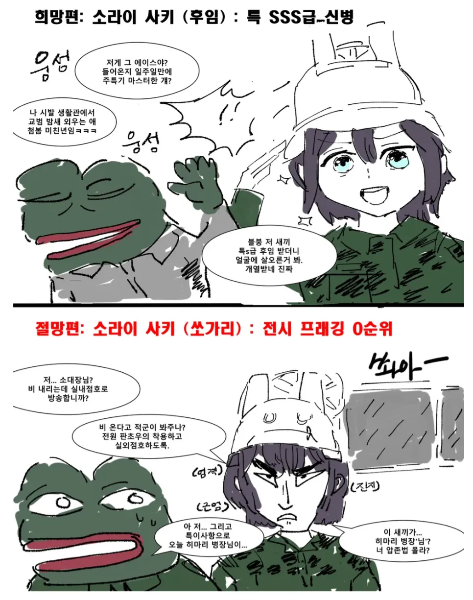
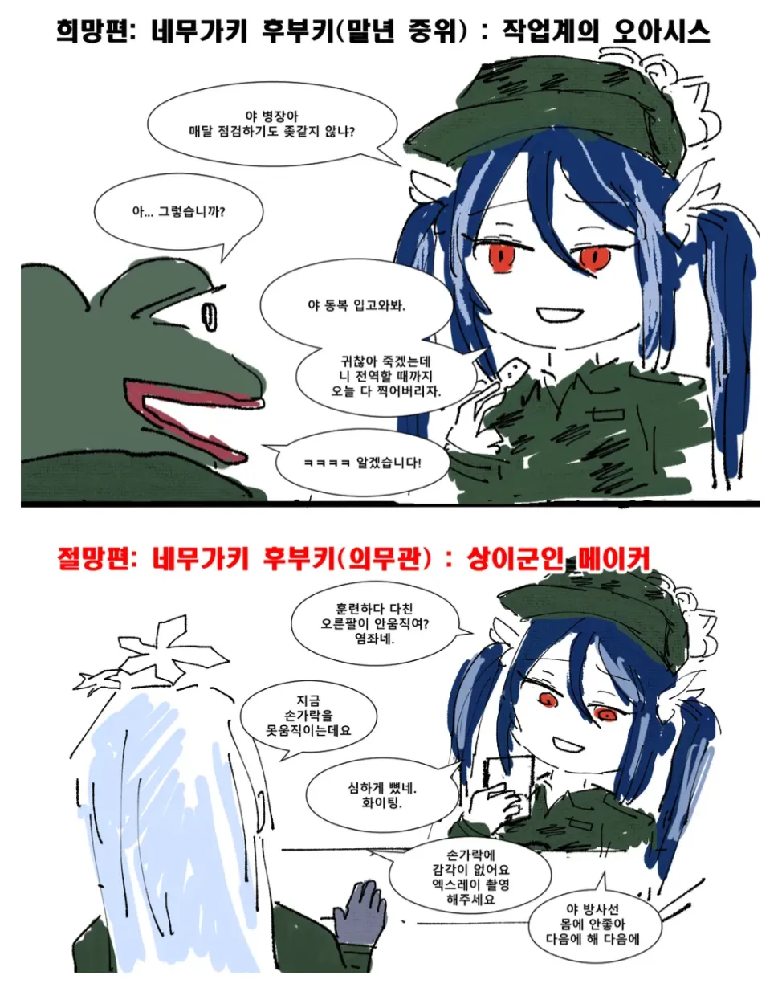
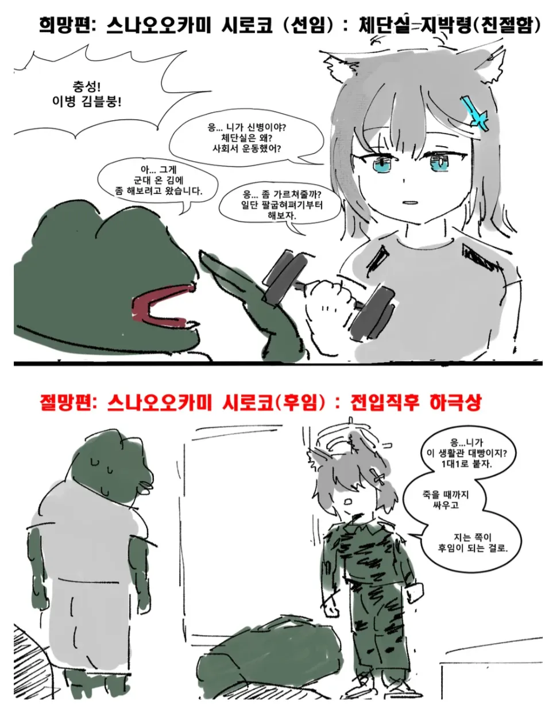
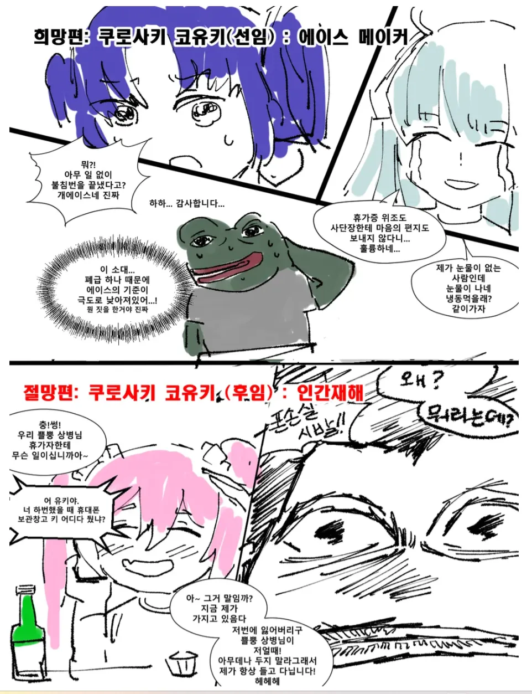

딱 보자마자 생각나는 게 히나는 일 똑부러지게 잘하면서(과로) 사고터지면 멘헤라오는 정작과장(*)이고, 미유는 부대에 물 흐르듯 있다가 진짜 희박한 존재감으로(그래도 은근인망좋음) 군생활하면서 무탈하게 전역하는 용사 느낌.
저 각종 열쇠키 잃어버린놈 존나 많아서 그냥 존나 많이 사둔다음 잃어버렸다 생각들면 걍 잘라버림 통신병인데 시발련들이 무슨 철물점 아저씨인줄 아나 관물대에 절단기랑 뺀치 걸어둠
너도? 나도 시발 ㅋㅋㅋㅋㅋㅋ 난 정보과인데, 나 처음 왔을 때 잘 대해주던 동기가 행정병인데, 고작 열쇠랑 자물쇠 때문에 이 친구 속 썩히는 후임 존나 많아서, 전에 휴가 나갔을 때 똑같은 거 30개 사서 복귀함. 창고에 절단기는 있어서, 휴대폰 보관함, 총기함 상 하 등의 명찰만 인쇄해서 그대로 가져다줌. 스페어 자물쇠랑 키가 많아지니까 사람들이 여유로워지더라..
니하아아악-!!
피페조아
코유키 후임을 씨발 내가 전역할때까지 개고생이란 소리잖아 ㅋㅋㅋㅋ
한국인은 좋아하는 캐릭터를 군대 어쩌구 저쩌구